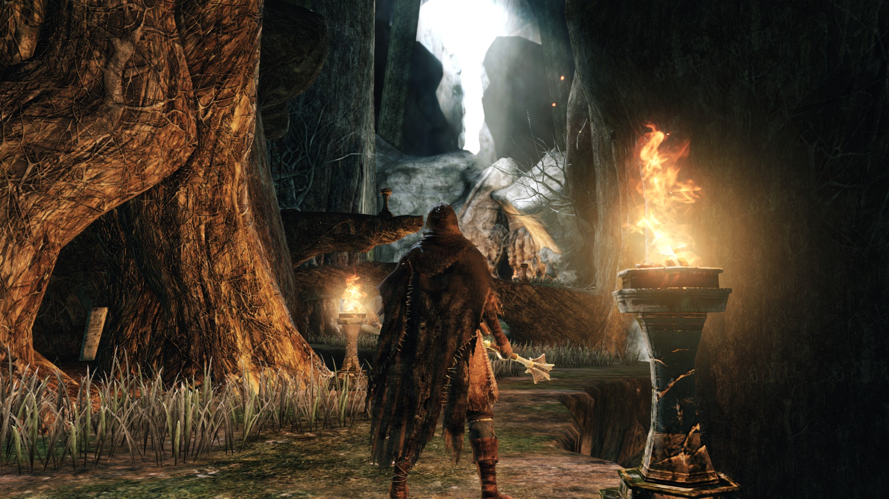

Междумирье
Описание
Это Лимб. Связь между Дрангликом и внешним миром. Милибет

Примечания
В доме, который находится недалеко от начала игры, будут 3 старухи — Хранительницы Огня. С их помощью можно создать персонажа, а в дальнейшем, используя Сосуд Души, перераспределить очки характеристик.
Если прийти к Хранительницам, имея в инвентаре Королевское кольцо, они дадут вам 6 человеческих фигурок.
Если убить Стровен и Милибет, из них выпадет 9 человеческих фигурок.
В локации можно встретить 3 Огров: одного в начале, недалеко от хижины Хранительниц, и двух возле гроба на берегу.
За убийство первого вы получите Каменное кольцо, которое гарантированно выпадет с монстра.
За убийство двух огров на берегу вы сможете получить половник служанки, поговорив с Милибет.
Обоих огров можно расстрелять с уступа, на котором персонажа учат делать удар в спину. Всё, что понадобится — лук с дальностью стрельбы 50 и выше и побольше стрел.
Гроб около двух огров меняет пол персонажа. Такую процедуру вы сможете проделать неограниченное количество раз. После использования гроба все враги на локации восстановятся.
В локации находится гнездо, в котором проживают невидимые птенцы Дина и Тилло. У них можно обменивать гладкий шелковистый камешек, гладкий шелковистый камень, радужный камень и нечто окаменевшее на различные предметы. Для этого необходимо просто выкинуть их, находясь в гнезде, и сразу подобрать новый предмет. Наиболее редкие вещи, которые можно получить за обмен это: Белое кольцо, позволяющее принять облик фантома, Спиритический трезубец, Демонический молот, а также Старый кнут.
Сразу же после начала Новой игры + и появления в Междумирье, вас атакуют несколько Сокольников, а на подходе к хижине Хранительниц — 2 фантома-гоблина. Гоблины довольно простые противники — безоружные и медлительные. После отдыха у костра они возрождаются. Ещё одного красного фантома можно обнаружить на пути к ограм возле гроба — он вооружен арбалетом и ждет в самом низу полого дерева.
Если после начала новой игры стоять на месте некоторое время, то к вам подойдёт кобольд.